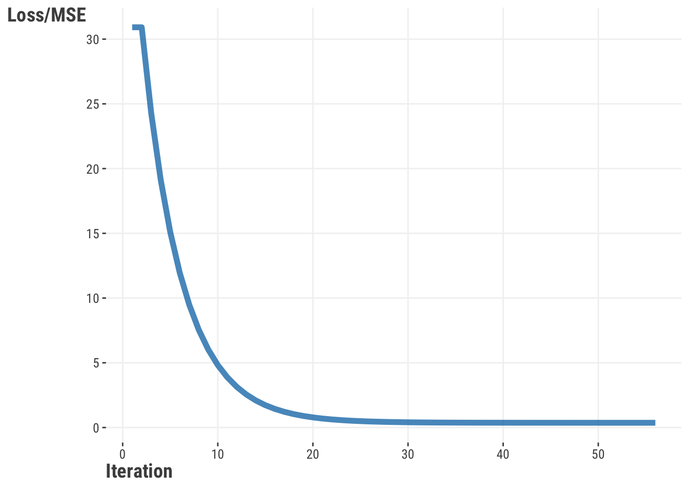
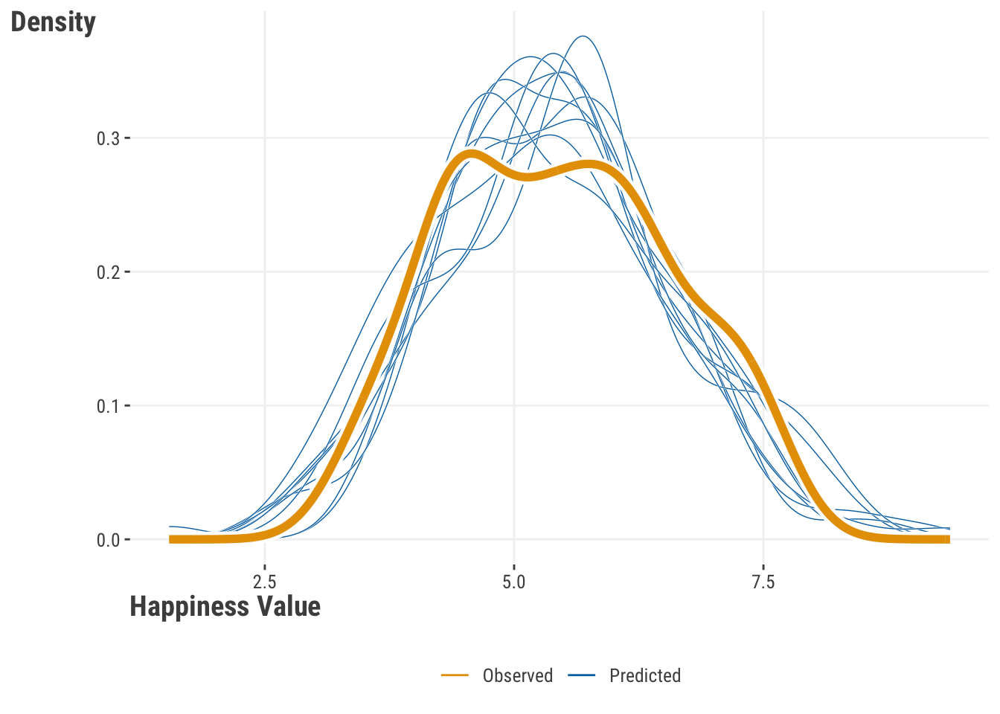

| term | happiness | life_exp | log_gdp_pc | corrupt |
|---|---|---|---|---|
| happiness | 1.00 | 0.78 | 0.82 | −0.47 |
| life_exp | 0.78 | 1.00 | 0.86 | −0.34 |
| log_gdp_pc | 0.82 | 0.86 | 1.00 | −0.34 |
| corrupt | −0.47 | −0.34 | −0.34 | 1.00 |
6 Model Estimation and Optimization
In our initial linear model, the coefficients for each feature are the key parameters. But how do we know what the coefficients are, and how did we come to those values? When we explore a linear model using some package function, they appear magically, but it’s worth knowing a little bit about how they come to be, so let’s try and dive a little deeper. As we do so, we’ll end up going a long way into ‘demystifying’ the modeling process.
Model estimation is the process of finding the parameters associated with a model that allow us to reach a particular modeling goal. Different types of models will have different parameters to estimate, and there are different ways to estimate them. In general though, the goal is the same, find the set of parameters that will lead to the best predictions under the current data modeling context.
With model estimation, we can break things down into the following steps:
- Start with an initial guess for the parameters.
- Calculate the prediction error based on those parameters, or some function of it, or some other value that represents our model’s objective.
- Update the guess.
- Repeat steps 2 & 3 until we find a ‘best’ guess.
Pretty straightforward, right? Well, it’s not always so simple, but this is the general idea in most applications, so keep it in mind! In this chapter, we’ll show how to do this ourselves to take away the mystery a bit from when you run standard model functions in typical contexts. Hopefully then you’ll gain more confidence when you do use them!
6.1 Key Ideas
A few concepts we’ll keep using here are fundamental to understanding estimation and optimization. We should note that we’re qualifying our present discussion of these topics to typical linear models, machine learning, and similar settings, but they are much more broad and general than presented here. We’ve seen some of this before, but we’ll be getting a bit cozier with the concepts now.
- Parameters are the values associated with a model that we have to estimate.
- Estimation is the process of finding the parameters associated with a model.
- The objective (loss) function takes input and produces a value that we want to maximize or minimize.
- Prediction error is the difference between the observed value of the target and the predicted value, and is often used to calculate the objective function.
- Optimization is the specific process of finding the parameters that maximize or minimize some objective function.
- Model Selection is the process of choosing the best model from a set of models.
6.1.1 Why this matters
When it comes to modeling, even knowing just a little bit about what goes on behind the scenes is a great demystifier. And if models are less of a mystery, you’ll feel more confident using them. Much of what you see here is part of almost every common model used for statistics and machine learning, providing you even more of a foundation for expanding your modeling skills.
6.1.2 Helpful context
This chapter is more involved and technical than most of the others, so might be more suited for those who like to get their hands dirty. It’s all about ‘rolling your own’, and so we’ll be doing a lot of the work ourselves. If you’re not one of those types of people that gets much out of that, that’s ok, you can skip this chapter and still get a lot out of the rest of the book. But if you’re curious about how models work, or you want to be able to do more than just run a canned function, then we think you’ll find the following useful. You’d want to at least have your linear model basics down (Chapter 3).
6.2 Data Setup
For the examples here, we’ll use the world happiness dataset for the year 2018. We’ll use the happiness score as our target. Let’s take an initial look at the data here, but for more information see the appendix Section D.2.

Our happiness score has values from around 3-7, life expectancy and gdp appear to have some notable variability, and corruption perception is skewed toward lower values. We can also see that the features and target are correlated with each other, which is not surprising.
For our purposes here, we’ll drop any rows with missing values, and we’ll use scaled features so that they have the same variance, which, as noted in the data chapter, can help make estimation easier.
df_happiness = read_csv('https://tinyurl.com/worldhappiness2018') |>
drop_na() |>
rename(happiness = happiness_score) |>
select(
country,
happiness,
contains('_sc')
)import pandas as pd
df_happiness = (
pd.read_csv('https://tinyurl.com/worldhappiness2018')
.dropna()
.rename(columns = {'happiness_score': 'happiness'})
.filter(regex = '_sc|country|happ')
)6.2.1 Other Setup
For the R examples, after the above nothing beyond base R is needed. For Python examples, the following should be enough to get you through the examples.
import pandas as pd
import numpy as np
import statsmodels.api as sm
import statsmodels.formula.api as smf
from sklearn.linear_model import LinearRegression
from sklearn.model_selection import train_test_split
from scipy.optimize import minimize
from scipy.stats import norm6.3 Starting Out by Guessing
So, we’ll start with a model in which we predict a country’s level of happiness by their life expectancy. If you can expect to live longer, maybe you’re probably in a country with better health care, higher incomes, and other important stuff. As such we can probably expect higher happiness scores with higher life expectancy. We’ll stick with a linear regression model as well to start out.
As a starting point we can just guess what the parameter should be. But how would we know what to guess? How would we know which guesses are better than others? Let’s try a couple guesses and see what happens. Let’s say that we think all countries start at the bottom on the happiness scale (around 3), but life expectancy makes a big impact- for every standard deviation of life expectancy we go up a whole point on happiness1. We can plug this into the model and see what we get:
\[ \text{prediction} = 3.3 + 1\cdot\text{life\_exp} \]
For a different model, we’ll say countries start with a mean of happiness score, and moving up a standard deviation of life expectancy would move us up a half point of happiness. \[ \text{prediction} = \overline{\text{happiness}} + .5\cdot\text{life\_exp} \]
How do we know which is better? Let’s find out!
6.4 Prediction Error
We’ve seen that a key component to model assessment involves comparing the predictions from the model to the actual values of the target. This difference is known as the prediction error, or residuals in more statistical contexts. We can express this as:
\[ \epsilon = y - \hat{y} \] \[ \text{error} = \text{target} - \text{model-based guess} \]
This prediction error tells us how far off our model prediction is from the observed target values, but it also gives us a way to compare models. How? With our measure of prediction error, we can calculate a total error for all observations/predictions (Section 4.2), or similarly, the average error. If one model or parameter set has less total or average error, we can say it’s a better model than one that has more (Section 4.3). Ideally we’d like to choose a model with the least possible error, but we’ll see that this is not always possible2.
However, if we just take the average of our errors from a linear regression model, you’ll see that it is roughly zero! This is by design for many common models, and is even made explicit in their mathematical depiction. So, to get a meaningful error metric, we need to use the squared error value or the absolute value. These also allow errors of similar value above and below the observed value to cost the same3. As we’ve done elsewhere, we’ll use squared error here, and we’ll calculate the mean of the squared errors for all our predictions, i.e. the mean squared error (MSE).
y = df_happiness$happiness
# Calculate the error for the guess of 4
prediction = min(df_happiness$happiness) + 1*df_happiness$life_exp_sc
mse_model_A = mean((y - prediction)^2)
# Calculate the error for our other guess
prediction = mean(y) + .5 * df_happiness$life_exp_sc
mse_model_B = mean((y - prediction)^2)
tibble(
Model = c('A', 'B'),
MSE = c(mse_model_A, mse_model_B)
)y = df_happiness['happiness']
# Calculate the error for the guess of four
prediction = np.min(df_happiness['happiness']) + 1 * df_happiness['life_exp_sc']
mse_model_A = np.mean((y - prediction)**2)
# Calculate the error for our other guess
prediction = y.mean() + .5 * df_happiness['life_exp_sc']
mse_model_B = np.mean((y - prediction)**2)
pd.DataFrame({
'Model': ['A', 'B'],
'MSE': [mse_model_A, mse_model_B]
})Now let’s look at our MSE, and we’ll also inspect the square root of it, or the Root Mean Squared Error, as that puts things back on the original target scale, and tells us the standard deviation of our prediction errors. We also add the Mean Absolute Error (MAE) as another metric with straightforward interpretation.
| Model | MSE | RMSE | MAE | RMSE % drop | MAE % drop |
|---|---|---|---|---|---|
| A | 5.09 | 2.26 | 1.52 | ||
| B | 0.64 | 0.80 | 0.58 | 65% | 62% |
Inspecting the metrics, we can see that we are off on average by over a point for model A (MAE), and a little over half a point on average for model B. So we can see that model B is not only better, but results in a 65% drop in RMSE, and similar for MAE. We’d definitely prefer it over model A. This approach is also how we can compare models in a general fashion.
Now all of this is useful, and at least we can say one model is better than another. But you’re probably hoping there is an easier way to get a good guess for our model parameters, especially when we have possibly dozens of features and/or parameters to keep track of, and there is!
6.5 Ordinary Least Squares
In a simple linear model, we often use the Ordinary Least Squares (OLS) method to estimate parameters. This method finds the coefficients that minimize the sum of the squared differences between the predicted and actual values4. In other words, it finds the coefficients that minimize the sum of the squared differences between the predicted values and the actual values, which is what we just did in our previous example. The sum of the squared errors is also called the residual sum of squares (RSS), as opposed to the ‘total’ sums of squares (i.e. the variance of the target), and the part explained by the model (‘model’ or ‘explained’ sums of squares). We can express this as follows, where \(y_i\) is the observed value of the target for observation \(i\), and \(\hat{y_i}\) is the predicted value from the model.
\[ \text{Value} = \sum_{i=1}^{n} (y_i - \hat{y_i})^2 \tag{6.1}\]
It’s called ordinary least squares because there are other least squares methods - generalized least squares, weighted least squares, and others, but we don’t need to worry about that for now. The sum or mean of the squared errors is our objective value. The objective function takes the predictions and observed target values as inputs, and returns the objective value as an output. We can use this value to find the best parameters for a specific model, as well as compare models with different parameters.
Now let’s calculate the OLS estimate for our model. We need our own function to do this, but it doesn’t take much to create one. We need to map our inputs to our output, which are the model predictions. We then calculate the error, square it, and then average the squared errors to provide the mean squared error.
# for later comparison
model_lr_happy = lm(happiness ~ life_exp_sc, data = df_happiness)
ols = function(X, y, par) {
# add a column of 1s for the intercept
X = cbind(1, X)
# Calculate the predicted values
y_hat = X %*% par # %*% is matrix multiplication
# Calculate the error
error = y - y_hat
# Calculate the value as mean squared error
value = sum(error^2) / nrow(X)
# Return the objective value
return(value)
}# for later comparison
model_lr_happy = smf.ols('happiness ~ life_exp_sc', data = df_happiness).fit()
def ols(par, X, y):
# add a column of 1s for the intercept
X = np.c_[np.ones(X.shape[0]), X]
# Calculate the predicted values
y_hat = X @ par # @ is matrix multiplication
# Calculate the mean of the squared errors
value = np.mean((y - y_hat)**2)
# Return the objective value
return valueWe’ll want to make a bunch of guesses for the parameters, so let’s create data for those guesses. We’ll then choose the guess that gives us the lowest objective value. But before getting carried away, try it out for just one guess to see how it works!
# create a grid of guesses
guesses = crossing(
b0 = seq(1, 7, 0.1),
b1 = seq(-1, 1, 0.1)
)
# Example for one guess
ols(
X = df_happiness$life_exp_sc,
y = df_happiness$happiness,
par = unlist(guesses[1, ])
)[1] 23.78# create a grid of guesses
from itertools import product
guesses = pd.DataFrame(
product(
np.arange(1, 7, 0.1),
np.arange(-1, 1, 0.1)
),
columns = ['b0', 'b1']
)
# Example for one guess
ols(
par = guesses.iloc[0,:],
X = df_happiness['life_exp_sc'],
y = df_happiness['happiness']
)23.77700449624871Now we’ll calculate the loss for each guess and find which one gives us the smallest function value.
# Calculate the function value for each guess, mapping over
# each combination of b0 and b1
guesses = guesses |>
mutate(
objective = map2_dbl(
guesses$b0,
guesses$b1,
\(b0, b1) ols(
par = c(b0, b1),
X = df_happiness$life_exp_sc,
y = df_happiness$happiness
)
)
)
min_loss = guesses |> filter(objective == min(objective))
min_loss# A tibble: 1 × 3
b0 b1 objective
<dbl> <dbl> <dbl>
1 5.4 0.9 0.491# Calculate the function value for each guess, mapping over
# each combination of b0 and b1
guesses['objective'] = guesses.apply(
lambda x: ols(
par = x,
X = df_happiness['life_exp_sc'],
y = df_happiness['happiness']
),
axis = 1
)
min_loss = guesses[guesses['objective'] == guesses['objective'].min()]
min_loss b0 b1 objective
899 5.400 0.900 0.491The following plot shows the objective value for each guess in a smooth fashion as if we had a more continuous space. Darker values indicate we’re getting closer to our smallest objective value. The star notes our best guess.
Now let’s run the model using standard functions.
model_lr_happy_life = lm(happiness ~ life_exp_sc, data = df_happiness)
# not shown
c(coef(model_lr_happy_life), performance::performance_mse(model_lr_happy_life))model_lr_happy_life = sm.OLS(df_happiness['happiness'], sm.add_constant(df_happiness['life_exp_sc'])).fit()
# not shown
model_lr_happy_life.params, model_lr_happy_life.scaleIf we inspect our results from the standard functions, we had estimates of 5.44 and 0.89 for our coefficients versus the best guess from our approach of 5.4 and 0.9. These are very similar but not exactly the same, but this is mostly due to the granularity of our guesses. Even so, in the end we can see that we get pretty dang close to what our basic lm or statsmodels functions would get us. Pretty neat!
6.6 Optimization
Before we get into other objective functions, let’s think about a better way to find good parameters for our model. Rather than just guessing, we can use a more systematic approach, and thankfully, there are tools out there to help us. We just use a function like our OLS function, give it a starting point, and let the algorithms do the rest! These tools eventually arrive at a pretty good set of parameters, and are optimized for speed.
Previously we created a set of guesses, and tried each one. This approach is often called a grid search, as we search over a grid of possible parameters as in Figure 6.2, and it is a bit of a brute force approach to finding the best fitting model. You can maybe imagine a couple of unfortunate scenarios for this approach. One is just having a very large number of parameters to search, a common issue in deep learning. Or it may be that our range of guesses doesn’t allow us to find the right set of parameters. Or perhaps we specify a very large range, but the best fitting model is within a very narrow part of that, so that it takes a long time to find them. In any of these cases we waste a lot of time or may not find an optimal solution.
In general, we can think of optimization as employing a smarter, more efficient way to find what you’re looking for. Here’s how it works:
- Start with an initial guess for the parameters.
- Calculate the objective function given the parameters.
- Update the parameters to a new guess (that hopefully improves the objective function).
- Repeat, until the improvement is small enough to not be worth continuing, or an arbitrary maximum number of iterations is reached.
With optimization, the key aspect is how we update the old parameters with a new guess at each iteration. Different optimization algorithms use different approaches to find those new guesses. The process stops when the improvement is smaller than a set tolerance level, or the maximum number of iterations is reached. If the objective is met, we say that our model has converged. Sometimes, the number of iterations is not enough for us to reach convergence in terms of tolerance, and we have to try again with a different set of parameters, a different algorithm, maybe use some data transformations, or something else.
So, let’s try it out! We start out with several inputs:
- the objective function
- the initial guess for the parameters to get things going
- other related inputs to the objective function, such as the data
- options for the optimization process, e.g. algorithm, maximum number of iterations, etc.
With these inputs, we’ll let the chosen optimization function do the rest of the work. We’ll again compare our results to the standard functions to make sure we’re on the right track.
We’ll use the optim function in R.
our_ols_optim = optim(
par = c(1, 0), # initial guess for the parameters
fn = ols,
X = df_happiness$life_exp_sc,
y = df_happiness$happiness,
method = 'BFGS', # optimization algorithm
control = list(
reltol = 1e-6, # tolerance
maxit = 500 # max iterations
)
)
our_ols_optimWe’ll use the minimize function in Python.
from scipy.optimize import minimize
our_ols_optim = minimize(
fun = ols,
x0 = np.array([1., 0.]), # initial guess for the parameters
args = (
np.array(df_happiness['life_exp_sc']),
np.array(df_happiness['happiness'])
),
method = 'BFGS', # optimization algorithm
tol = 1e-6, # tolerance
options = {
'maxiter': 500 # max iterations
}
)
our_ols_optimOptimization functions typically return multiple values, including the best parameters found, the value of the objective function at that point, and sometimes other information like the number of iterations it took to reach the returned value and whether or not the process converged. This can be quite a bit of stuff, so we don’t show the raw output, but we definitely encourage you to inspect it closely. The following table shows the estimated parameters and the objective value for our model, and we can compare it to the standard functions to see how we did.
| Parameter | Standard | Our Result |
|---|---|---|
| Intercept | 5.4450 | 5.4450 |
| Life Exp. Coef. | 0.8880 | 0.8880 |
| Objective/MSE | 0.4890 | 0.4890 |
So, our little function and the right tool allows us to come up with the same thing as base R and statsmodels! I hope you’re feeling pretty good at this point because you should! You just proved you could do what seemed before to be like magic, but really all it took is just a little knowledge about some key concepts to demystify the process. So, let’s keep going!
6.7 Maximum Likelihood
In our example, we’ve been minimizing the mean of the squared errors to find the best parameters for our model. But let’s think about this differently. Now we’d like you to think about the data generating process. Ignoring the model, imagine that each happiness value is generated by some random process, like drawing from a normal distribution. So, something like this would describe it mathematically:
\[ \text{happiness} \sim N(\text{mean}, \text{sd}) \]
where the mean is just the mean of happiness, and sd is its standard deviation. In other words, we can think of happiness as a random variable that is drawn from a normal distribution with mean and standard deviation as the parameters of that distribution.
Let’s apply this idea to our linear model setting. In this case, the mean is a function of life expectancy, and we’re not sure what the standard deviation is, but we can go ahead and write our model as follows.
\[ \text{mean} = \beta_0 + \beta_1 * \text{life\_exp} \] \[ \text{happiness} \sim N(\text{mean}, \text{sd}) \]
Now, our model is estimating the parameters of the normal distribution. We have an extra parameter to estimate - the standard deviation, which is similar to our RMSE.
In our analysis, instead of merely comparing the predicted happiness score to the actual score by looking at their difference, we do something a little different to get a sense of their correspondence. We consider how likely it is to observe the actual happiness score based on our prediction. The value known as the likelihood, depends on our model’s parameters. The likelihood is determined by the statistical distribution we’ve selected for our analysis. We can write this as:
\[ \text{Pr}(\text{happiness} \mid \text{life\_exp}, \beta_0, \beta_1, \text{sd}) \]
\[ \text{Pr}(\text{happiness} \mid \text{mean}, \text{sd}) \]
Thinking more generally, the likelihood gives us the probability of the observed data given the parameter estimates.
\[ \text{Pr}(\text{Data} \mid \text{Parameters}) \]
The following shows how to calculate a likelihood for our model. The values you see are called probability density values. They’re not exactly probabilities, but they show the relative likelihood of each observation6. You can think of them like you do for probabilities, but remember that likelihoods are slightly different.
# two example life expectancy scores, at the mean (0) and 1 sd above
life_expectancy = c(0, 1)
# observed happiness scores
happiness = c(4, 5.2)
# predicted happiness with rounded coefs
mu = 5 + 1 * life_expectancy
# just a guess for sigma
sigma = .5
# likelihood for each observation
L = dnorm(happiness, mean = mu, sd = sigma)
L[1] 0.1080 0.2218from scipy.stats import norm
# two example life expectancy scores, at the mean (0) and 1 sd above
life_expectancy = np.array([0, 1])
# observed happiness scores
happiness = np.array([4, 5.2])
# predicted happiness with rounded coefs
mu = 5 + 1 * life_expectancy
# just a guess for sigma
sigma = .5
# likelihood for each observation
L = norm.pdf(happiness, loc = mu, scale = sigma)
Larray([0.1080, 0.2218])With a guess for the parameters and an assumption about the data’s distribution, we can calculate the likelihood of each data point, which is what our final result L shows. We eventually get a total likelihood for all observations, similar to how we added squared errors previously. But unlike errors, we want more likelihood, not less. In theory, we’d multiply each likelihood, but in practice we sum the log of the likelihood, otherwise values would get too small for our computers to handle. We can also turn our problem into a minimization problem by calculating the negative log-likelihood, and then minimizing that value, which many optimization algorithms are designed to do7.
The following is a function we can use to calculate the likelihood of the data given our parameters. This value, just like MSE, can also be used to compare models with different parameter guesses8. For the estimate of sigma, note that we are estimating its log value by exponentiating the parameter guess. This will keep it positive, as the standard deviation must be positive. We’ll hold off with our result until the table shown next.
max_likelihood = function(par, X, y) {
# setup
X = cbind(1, X) # add a column of 1s for the intercept
beta = par[-1] # coefficients
sigma = exp(par[1]) # error sd, exp keeps positive
N = nrow(X)
LP = X %*% beta # linear predictor
mu = LP # identity link in the glm sense
# calculate (log) likelihood
ll = dnorm(y, mean = mu, sd = sigma, log = TRUE)
value = -sum(ll) # negative for minimization
return(value)
}
our_max_like = optim(
par = c(1, 0, 0), # first param is sigma
fn = max_likelihood,
X = df_happiness$life_exp_sc,
y = df_happiness$happiness
)
our_max_like
# logLik(model_lr_happy_life) # one way to extract the log likelihood from a modeldef max_likelihood(par, X, y):
# setup
X = np.c_[np.ones(X.shape[0]), X] # add a column of 1s for the intercept
beta = par[1:] # coefficients
sigma = np.exp(par[0]) # error sd, exp keeps positive
N = X.shape[0]
LP = X @ beta # linear predictor
mu = LP # identity link in the glm sense
# calculate (log) likelihood
ll = norm.logpdf(y, loc = mu, scale = sigma)
value = -np.sum(ll) # negative for minimization
return value
our_max_like = minimize(
fun = max_likelihood,
x0 = np.array([1, 0, 0]), # first param is sigma
args = (
np.array(df_happiness['life_exp_sc']),
np.array(df_happiness['happiness'])
)
)
our_max_like# model_lr_happy_life.llf # one way to extract the log likelihood from a modelWe can compare our result to a built-in function that has capabilities beyond OLS, and the table shows we’re duplicating the basic result. We show more decimal places on the log likelihood estimate to prove we aren’t getting exactly the same result.
| Parameter | Standard | Our Result |
|---|---|---|
| Intercept | 5.445 | 5.445 |
| Life Exp. Coef. | 0.888 | 0.888 |
| Sigma1 | 0.705 | 0.699 |
| LogLik (neg) | 118.804 | 118.804 |
| 1 Parameter estimate is exponentiated for the by-hand approach | ||
To use a maximum likelihood approach for linear models, you can use functions like glm in R or GLM in Python, which is the reference used in the table above. We can also use different likelihoods corresponding to the binomial, poisson and other distributions. Still other packages would allow even more distributions for consideration. In general, we choose a distribution that we feel best reflects the data generating process. For binary targets for example, we typically would feel a bernoulli or binomial distribution is appropriate. For count data, we might choose a poisson or negative binomial distribution. For targets that fall between 0 and 1, we might go for a beta distribution. You can see some of these demonstrated in Chapter 7.
There are many distributions to choose from, and the best one depends on your data. Sometimes, even if one distribution seems like a better fit, we might choose another one because it’s easier to use. Some distributions are special cases of others, or they might become more like a normal distribution under certain conditions. For example, the exponential distribution is a special case of the gamma distribution, and a t distribution with many degrees of freedom looks like a normal distribution. Here is a visualization of the relationships among some of the more common distributions (Wikipedia (2023)).

When you realize that many distributions are closely related, it’s easier to understand why we might choose one over another, but also why we might use a simpler option even if it’s not the best fit - you likely won’t come to a different conclusion about your model. Ultimately, you’ll get a better feel for this as you work with different types of data and models.
Here are examples of standard GLM functions, which just require an extra argument for the family of the distribution.
glm(happiness ~ life_exp_sc, data = df_happiness, family = gaussian)
glm(binary_target ~ x1 + x2, data = some_data, family = binomial)
glm(count ~ x1 + x2, data = some_data, family = poisson)import statsmodels.formula.api as smf
smf.glm(
'happiness ~ life_exp_sc',
data = df_happiness,
family = sm.families.Gaussian()
)
smf.glm(
'binary_target ~ x1 + x2',
data = some_data,
family = sm.families.Binomial()
)
smf.glm(
'count ~ x1 + x2',
data = some_data,
family = sm.families.Poisson()
)6.7.1 Diving deeper
Let’s think more about what’s going on here, as it applies to estimation and optimization in general. It turns out that our objective function defines a ‘space’ or ‘surface’. You can imagine the process as searching for the lowest point on a landscape, with each guess a point on this landscape. Let’s start to get a sense of this with the following visualization, based on a single parameter. The following visualization shows this for a single parameter. The data comes from a variable with a true average of 5. As our guesses get closer to 5, the likelihood increases. However, with more and more data, the final guess converges on the true value. Model estimation finds that maximum on the curve, and optimization algorithms are the means to find it.

Now let’s add a parameter. If we have more than one parameter, we now have an objective surface to deal with. Given a starting point, an optimization procedure then travels along the surface looking for a minimum/maximum point. For simpler settings such as this, we can visualize the likelihood surface and its minimum point. However, even our simple model has three parameters plus the likelihood, so it would be difficult to visualize without additional complexity. Instead, we show the results for an alternate model where happiness is standardized also, which means the intercept is zero9, and so not shown.
We can also see the path our estimates take. Starting at a fairly bad estimate, the optimization algorithm quickly updates to estimates that result in a better likelihood value. We also see little exploratory jumps creating a star like pattern, before things ultimately settle to the best values. In general, these updates and paths are dependent on the optimization algorithm one uses.

What we’ve shown here with maximum likelihood applies in general to searching for the best solution along an objective function surface. In most modeling circumstances, the surface is very complex with lots of points that might represent ‘local’ minimums, even though we’d ideally find the ‘global’ minimum. This is why we need optimization algorithms to help us find the best solution10. The optimization algorithms we’ll use are general purpose, and can be used for many different types of problems. The key is to define an appropriate objective function, and then let the algorithm do the work.
6.8 Penalized Objectives
One thing we may want to take into account with our models is their complexity, especially in the context of overfitting. We talk about this with machine learning also (Chapter 9), but the basic idea is that we can get too familiar with the data we have, and when we try to predict on new data the model hasn’t seen before, model performance suffers. In other words, we are not generalizing well (Section 9.4).
One way to deal with this is to penalize the objective function value for complexity, or at least favor simpler models that might do as well. In some contexts this is called regularization, and in other contexts shrinkage, since the parameter estimates are typically shrunk toward some specific value (e.g., zero).
As a starting point, in our basic linear model we can add a penalty that is applied to the size of coefficients. This is called ridge regression, or, more mathily, as L2 regularization. We can write this formally as:
The first part is the same as basic OLS (Equation 6.1), but the second part is the penalty for \(p\) features. The penalty is the sum of the squared coefficients multiplied by some value, which we call \(\lambda\). This is an additional model parameter that we typically want to estimate, for example, through cross-validation. This kind of parameter is often called a hyperparameter, mostly just to distinguish it from those that may be of actual interest. For example, we could probably care less what the actual value for \(\lambda\) is, but we would still be interested in the coefficients.
In the end this is just a small change to ordinary least squares (OLS) regression (Equation 6.1), but it can make a big difference. It introduces some bias in the coefficients - recall that OLS is unbiased if assumptions are met - but it can help to reduce variance, which can help the model perform better on new data (Section 9.4.2). In other words, we are willing to accept some bias in order to get a model that generalizes better.
But let’s get to an example to demystify this a bit! Here is an example of a function that calculates the ridge objective. To make things interesting, let’s add the other features we talked about regarding GDP per capita and perceptions of corruption.
ridge = function(par, X, y, lambda = 0) {
# add a column of 1s for the intercept
X = cbind(1, X)
mu = X %*% par # linear predictor
# Calculate the value as sum squared error
error = sum((y - mu)^2)
# Add the penalty
value = error + lambda * sum(par^2)
return(value)
}
X = df_happiness |>
select(-happiness, -country) |>
as.matrix()
our_ridge = optim(
par = c(0, 0, 0, 0),
fn = ridge,
X = X,
y = df_happiness$happiness,
lambda = 0.1,
method = 'BFGS'
)
our_ridge$par# we use lambda_ because lambda is a reserved word in python
def ridge(par, X, y, lambda_ = 0):
# add a column of 1s for the intercept
X = np.c_[np.ones(X.shape[0]), X]
# Calculate the predicted values
mu = X @ par
# Calculate the error
value = np.sum((y - mu)**2)
# Add the penalty
value = value + lambda_ * np.sum(par**2)
return value
our_ridge = minimize(
fun = ridge,
x0 = np.array([0, 0, 0, 0]),
args = (
np.array(df_happiness.drop(columns=['happiness', 'country'])),
np.array(df_happiness['happiness']),
0.1
)
)
our_ridge['x']We can compare this to built-in functions as we have before11, and can see that the results are very similar, but not exactly the same. We would not worry about such differences in practice, but the main point is again, we can use simple functions that do just about as well as any what we’d get from package output.
| Parameter | Standard1 | Our Result |
|---|---|---|
| Intercept | 5.44 | 5.44 |
| life_exp_sc | 0.49 | 0.52 |
| corrupt_sc | −0.12 | −0.11 |
| gdp_pc_sc | 0.42 | 0.44 |
| 1 Showing results from R glmnet package with alpha = 0, lambda = .1 | ||
Another very common penalized approach is to use the sum of the absolute value of the coefficients, which is called lasso regression or L1 regularization. An interesting property of the lasso is that in typical implementations, it will potentially produce a value of zero for some coefficients, which is the same as dropping the associated feature from the model altogether. This is a form of feature selection or variable selection. The true values are never zero, but if we want to use a ‘best subset’ of features, this is one way we could do so. We can write the lasso objective as follows. The chapter exercise asks you to implement this yourself.
6.9 Classification
So far, we’ve been assuming a continuous target, but what if we have a categorical target? Now we have to learn a bunch of new stuff for that situation, right? Actually, no! When we want to model categorical targets, conceptually, nothing changes with our estimation approach! We still have an objective function that maximizes or minimizes some goal, and we can use the same algorithms to estimate parameters. However, we need to think about how we can do this in a way that makes sense for the binary target, or generalize to the multi-class case.
6.9.1 Misclassification Error
A straightforward correspondence to MSE is a function that minimizes classification error, or by the same token, maximizes accuracy. In other words, we can think of the objective function as the proportion of incorrect classifications. This is called the misclassification rate.
\[ \text{Value} = \frac{1}{n} \sum_{i=1}^{n} \mathbb{1}(y_i \neq \hat{y_i}) \tag{6.2}\]
In the equation, \(y_i\) is the actual value of the target for observation \(i\), arbitrarily coded as 1 or 0, and \(\hat{y_i}\) is the predicted class from the model. The \(\mathbb{1}\) is an indicator function that returns 1 if the condition is true, and 0 otherwise. In other words, we are counting the number of times the predicted value is not equal to the actual value, and dividing by the number of observations. Very straightforward, so let’s do this ourselves!
misclassification = function(par, X, y, class_threshold = .5) {
X = cbind(1, X)
# Calculate the 'linear predictor'
mu = X %*% par
# Convert to a probability ('sigmoid' function)
p = 1 / (1 + exp(-mu))
# Convert to a class
predicted_class = as.integer(
ifelse(p > class_threshold, 'good', 'bad')
)
# Calculate the mean error
value = mean(y - predicted_class)
return(value)
}def misclassification_rate(par, X, y, class_threshold = .5):
# add a column of 1s for the intercept
X = np.c_[np.ones(X.shape[0]), X]
# Calculate the 'linear predictor'
mu = X @ par
# Convert to a probability ('sigmoid' function)
p = 1 / (1 + np.exp(-mu))
# Convert to a class
predicted_class = np.where(p > class_threshold, 1, 0)
# Calculate the mean error
value = np.mean(y - predicted_class)
return valueNote that our function first adds a step to convert the linear combination of features, the linear predictor (called mu), to a probability. Once we have a probability, we use some threshold to convert it to a ‘class’. In this case, we use 0.5 as the threshold, but this could be different depending on the context, something we talk more about elsewhere (Section 4.2.2). We’ll leave it as an exercise for you to play around with this function, as the next objective function is far more commonly used. But at least you can see how easy it can be to switch from a numeric target to the classification case.
6.9.2 Log loss
A very common objective function for classification is log loss, sometimes called logistic loss, or cross-entropy12. For a binary target it is:
\[ \text{Value} = -\sum_{i=1}^{n} y_i \log(\hat{y_i}) + (1 - y_i) \log(1 - \hat{y_i}) \tag{6.3}\]
Where \(y_i\) is the actual value of the target for observation \(i\), and \(\hat{y_i}\) is the predicted value from the model (essentially a probability). It turns out that this is the same as the log-likelihood used in a maximum likelihood approach for logistic regression, made negative so we can minimize it.
We typically prefer this objective function to classification error because it results in a smooth optimization surface, like in the visualization we showed before for maximum likelihood (Section 6.7.1), which means it is differentiable in a mathematical sense. This is important because it allows us to use optimization algorithms that rely on derivatives in updating the parameter estimates. You don’t really need to get into that too much, but just know that a smoother objective function is something we prefer. Here’s some code to try out.
log_loss = function(par, X, y) {
X = cbind(1, X)
# Calculate the predicted values on the raw scale
y_hat = X %*% par
# Convert to a probability ('sigmoid' function)
y_hat = 1 / (1 + exp(-y_hat))
# likelihood
ll = y * log(y_hat) + (1 - y) * log(1 - y_hat)
# alternative
# dbinom(y, size = 1, prob = y_hat, log = TRUE)
value = -sum(ll)
return(value)
}def log_loss(par, X, y):
# add a column of 1s for the intercept
X = np.c_[np.ones(X.shape[0]), X]
# Calculate the predicted values
y_hat = X @ par
# Convert to a probability ('sigmoid' function)
y_hat = 1 / (1 + np.exp(-y_hat))
# likelihood
ll = y * np.log(y_hat) + (1 - y) * np.log(1 - y_hat)
value = -np.sum(ll)
return valueLet’s go ahead and demonstrate this. To create a classification problem, we’ll say that a country is ‘happy’ if the happiness score is greater than 5.5, and ‘unhappy’ otherwise. We’ll use the same features as before.
df_happiness_bin = df_happiness |>
mutate(happiness = ifelse(happiness > 5.5, 1, 0))
model_logloss = optim(
par = c(0, 0, 0, 0),
fn = log_loss,
X = df_happiness_bin |>
select(life_exp_sc:gdp_pc_sc) |>
as.matrix(),
y = df_happiness_bin$happiness
)
model_glm = glm(
happiness ~ life_exp_sc + corrupt_sc + gdp_pc_sc,
data = df_happiness_bin,
family = binomial
)
model_logloss$pardf_happiness_bin = df_happiness.copy()
df_happiness_bin['happiness'] = np.where(df_happiness['happiness'] > 5.5, 1, 0)
model_logloss = minimize(
log_loss,
x0 = np.array([0, 0, 0, 0]),
args = (
df_happiness_bin[['life_exp_sc', 'corrupt_sc', 'gdp_pc_sc']],
df_happiness_bin['happiness']
)
)
model_glm = smf.glm(
'happiness ~ life_exp_sc + corrupt_sc + gdp_pc_sc',
data = df_happiness_bin,
family = sm.families.Binomial()
).fit()
model_logloss['x']Once again, we can see that the results are very similar between our classification result and the built-in function.
| parameter | Standard | Our result |
|---|---|---|
| LogLike | 40.6635 | 40.6635 |
| intercept | −0.1637 | −0.1642 |
| life_exp_sc | 1.8172 | 1.8168 |
| corrupt_sc | −0.4648 | −0.4638 |
| gdp_pc_sc | 1.1311 | 1.1307 |
So, when it comes to classification, you should feel confident in what’s going on under the hood, just like you did with a numeric target. Too much is made of the distinction between ‘regression’ and ‘classification’ and it can be confusing to those starting out. In reality, classification just requires a slightly different way of thinking about the target, not something fundamentally different about the modeling process.
6.10 Optimization Algorithms
When it comes to optimization, there are many algorithms that have been developed over time. The main thing to keep in mind is that these are all just different ways to find the best fitting parameters for a model. Some may be better suited for certain data tasks, or provide computational advantages, but usually the choice of algorithm is not as important as many other modeling choices you’ll have to make.
6.10.1 Common Methods
Here are some of the options available in R’s optim or scipy’s minimize function. In addition, they are commonly used behind the scenes in many modeling functions.
- Nelder-Mead
- BFGS
- L-BFGS-B (provides constraints)
- Conjugate gradient
- Simulated annealing
- Newton’s method
Other common optimization methods include:
- Genetic algorithms
- Other Popular SGD extensions and variants
- RMSProp
- Adam/momentum
- Adagrad
The main reason to choose one method over another usually is based on factors like speed, memory use, or how well they work for certain models. For statistical contexts, many functions for generalized linear models use Newton’s method by default, but more complicated models, for example, mixed models, may implement a different approach for better convergence. In machine learning, stochastic gradient descent is popular because it can be relatively efficient in large data settings and easy to implement.
In general, we can always try different methods to see which works best, but usually the results will be similar if the results reach convergence. We’ll now demonstrate one of more common methods to get a sense of how these work.
6.10.2 Gradient descent
One of the most popular approaches in optimization is called gradient descent. It uses the gradient of the function we’re trying to optimize to find the best parameters. We still use objective functions as before, and gradient descent is just a way to find that path along the objective function surface as we discussed previously in the deep dive (Section 6.7.1).
More formally, the gradient is the vector of partial derivatives of the objective function with respect to each parameter. That may not mean much to you, but the basic idea is that the gradient provides a direction that points in the direction of steepest increase in the function. So if we want to maximize the objective function, we can take a step in the direction of the gradient, and if we want to minimize it, we can take a step in the opposite direction of the gradient (use the negative gradient).
The size of the ‘step’ is called the learning rate. Like the penalty parameter we saw with penalized regression, it is a hyperparameter that we can tune through cross-validation (Section 9.7). If the learning rate is too small, it will take a longer time to converge. If it’s too large, we might overshoot the objective and miss the best parameters. There are a number of variations on gradient descent that have been developed over time. Let’s see this in action with the world happiness model.
gradient_descent = function(
par,
X,
y,
tolerance = 1e-3,
maxit = 1000,
learning_rate = 1e-3
) {
X = cbind(1, X) # add a column of 1s for the intercept
N = nrow(X)
# initialize
beta = par
names(beta) = colnames(X)
mse = crossprod(X %*% beta - y) / N # crossprod provides sum(x^2)
tol = 1
iter = 1
while (tol > tolerance && iter < maxit) {
LP = X %*% beta
grad = t(X) %*% (LP - y)
betaCurrent = beta - learning_rate * grad
tol = max(abs(betaCurrent - beta))
beta = betaCurrent
mse = append(mse, crossprod(LP - y) / N)
iter = iter + 1
}
output = list(
par = beta,
loss = mse,
MSE = crossprod(LP - y) / nrow(X),
iter = iter,
predictions = LP
)
return(output)
}
X = df_happiness |>
select(life_exp_sc:gdp_pc_sc) |>
as.matrix()
our_gd = gradient_descent(
par = c(0, 0, 0, 0),
X = X,
y = df_happiness$happiness,
learning_rate = 1e-3
)def gradient_descent(
par,
X,
y,
tolerance = 1e-3,
maxit = 1000,
learning_rate = 1e-3
):
# add a column of 1s for the intercept
X = np.c_[np.ones(X.shape[0]), X]
# initialize
beta = par
loss = np.sum((X @ beta - y)**2)
tol = 1
iter = 1
while (tol > tolerance and iter < maxit):
LP = X @ beta
grad = X.T @ (LP - y)
betaCurrent = beta - learning_rate * grad
tol = np.max(np.abs(betaCurrent - beta))
beta = betaCurrent
loss = np.append(loss, np.sum((LP - y)**2))
iter = iter + 1
output = {
'par': beta,
'loss': loss,
'MSE': np.mean((LP - y)**2),
'iter': iter,
'predictions': LP
}
return output
our_gd = gradient_descent(
par = np.array([0, 0, 0, 0]),
X = df_happiness[['life_exp_sc', 'corrupt_sc', 'gdp_pc_sc']].to_numpy(),
y = df_happiness['happiness'].to_numpy(),
learning_rate = 1e-3
)Comparing our results, we have the following table. As usual, we see that the results are very similar to the standard linear regression approach. Once again, we have demystified a step in the modeling process!
| Value | Standard | Our Result |
|---|---|---|
| Intercept | 5.445 | 5.437 |
| life_exp_sc | 0.525 | 0.521 |
| corrupt_sc | −0.105 | −0.107 |
| gdp_pc_sc | 0.438 | 0.439 |
| MSE | 0.367 | 0.367 |
In addition, when we visualize the loss function across iterations, we see a smooth decline in the MSE value as we go along each iteration. This is a good sign that we are converging to an optimal solution.

6.10.3 Stochastic gradient descent
Stochastic gradient descent (SGD) is a version of gradient descent that uses a random sample of data to calculate the gradient, instead of using all the data. This makes it less accurate in some ways, but it’s faster, and can be parallelized across the CPU/GPU cores of the computing hardware environment. This speed is useful in machine learning when there’s a lot of data, which often makes the discrepancy of results between standard GD and SGD small. As such, you will see variants of it incorporated in many models in deep learning, but know that it can be used with much simpler models as well.
Let’s see this in action with the happiness model. The following is a conceptual version of the AdaGrad approach13, which is a variation of SGD that adjusts the learning rate for each parameter. We will also add a variation that you can explore that averages the parameter estimates across iterations, which is a common approach to improve the performance of SGD.
We are going to use a batch size of one, which is similar to a ‘streaming’ or ‘online’ version where we update the model with each observation. Since our data are alphabetically ordered, we’ll shuffle the data first. We’ll also use a stepsize_tau parameter, which is a way to adjust the learning rate at early iterations. The values for the learning rate and stepsize_tau are arbitrary, selected after some initial playing around, but you can play with them to see how they affect the results.
stochastic_gradient_descent = function(
par, # parameter estimates
X, # model matrix
y, # target variable
learning_rate = 1, # the learning rate
stepsize_tau = 0, # if > 0, a check on the LR at early iterations
seed = 123
) {
# initialize
set.seed(seed)
# shuffle the data
idx = sample(1:nrow(X), nrow(X))
X = X[idx, ]
y = y[idx]
X = cbind(1, X)
beta = par
# Collect all estimates
betamat = matrix(0, nrow(X), ncol = length(beta))
# Collect fitted values at each point))
fits = NA
# Collect loss at each point
loss = NA
# adagrad per parameter learning rate adjustment
s = 0
# a smoothing term to avoid division by zero
eps = 1e-8
for (i in 1:nrow(X)) {
Xi = X[i, , drop = FALSE]
yi = y[i]
# matrix operations not necessary here,
# but makes consistent with previous gd func
LP = Xi %*% beta
grad = t(Xi) %*% (LP - yi)
s = s + grad^2 # adagrad approach
# update
beta = beta - learning_rate /
(stepsize_tau + sqrt(s + eps)) * grad
betamat[i, ] = beta
fits[i] = LP
loss[i] = crossprod(LP - yi)
}
LP = X %*% beta
lastloss = crossprod(LP - y)
output = list(
par = beta, # final estimates
par_chain = betamat, # estimates at each iteration
MSE = sum(lastloss) / nrow(X),
predictions = LP
)
return(output)
}
X = df_happiness |>
select(life_exp_sc, corrupt_sc, gdp_pc_sc) |>
as.matrix()
y = df_happiness$happiness
our_sgd = stochastic_gradient_descent(
par = c(mean(df_happiness$happiness), 0, 0, 0),
X = X,
y = y,
learning_rate = .15,
stepsize_tau = .1
)
c(our_sgd$par, our_sgd$MSE)def stochastic_gradient_descent(
par, # parameter estimates
X, # model matrix
y, # target variable
learning_rate = 1, # the learning rate
stepsize_tau = 0, # if > 0, a check on the LR at early iterations
average = False # a variation of the approach
):
# initialize
np.random.seed(1234)
# shuffle the data
idx = np.random.choice(
df_happiness.shape[0],
df_happiness.shape[0],
replace = False
)
X = X[idx, :]
y = y[idx]
X = np.c_[np.ones(X.shape[0]), X]
beta = par
# Collect all estimates
betamat = np.zeros((X.shape[0], beta.shape[0]))
# Collect fitted values at each point))
fits = np.zeros(X.shape[0])
# Collect loss at each point
loss = np.zeros(X.shape[0])
# adagrad per parameter learning rate adjustment
s = 0
# a smoothing term to avoid division by zero
eps = 1e-8
for i in range(X.shape[0]):
Xi = X[None, i, :]
yi = y[i]
# matrix operations not necessary here,
# but makes consistent with previous gd func
LP = Xi @ beta
grad = Xi.T @ (LP - yi)
s = s + grad**2 # adagrad approach
# update
beta = beta - learning_rate / \
(stepsize_tau + np.sqrt(s + eps)) * grad
betamat[i, :] = beta
fits[i] = LP
loss[i] = np.sum((LP - yi)**2)
LP = X @ beta
lastloss = np.sum((LP - y)**2)
output = {
'par': beta, # final estimates
'par_chain': betamat, # estimates at each iteration
'MSE': lastloss / X.shape[0],
'predictions': LP
}
return output
X = df_happiness[['life_exp_sc', 'corrupt_sc', 'gdp_pc_sc']].to_numpy()
y = df_happiness['happiness'].to_numpy()
our_sgd = stochastic_gradient_descent(
par = np.array([np.mean(df_happiness['happiness']), 0, 0, 0]),
X = X,
y = y,
learning_rate = .15,
stepsize_tau = .1
)
our_sgd['par'], our_sgd['MSE']Next we’ll compare it to OLS estimates and our previous ‘batch’ gradient descent results. Even though SGD normally would not be used for such a small dataset, we at least get close14!
| Value | Standard | Our Result | Batch SGD |
|---|---|---|---|
| Intercept | 5.445 | 5.469 | 5.437 |
| life_exp_sc | 0.525 | 0.514 | 0.521 |
| corrupt_sc | −0.105 | −0.111 | −0.107 |
| gdp_pc_sc | 0.438 | 0.390 | 0.439 |
| MSE | 0.367 | 0.370 | 0.367 |
Here’s a plot of the estimates as they moved along the data. For this plot we don’t include the intercept as it’s on a notably different scale. We can see that the estimates are moving around a bit, but they appear to be converging to a solution.

To wrap things up, here are the results for the happiness model using different optimization algorithms, with a comparison to the standard linear regression model function. We can see that the results are very similar, and for simpler modeling endeavors they should converge on the same result.
| parameter | NM1 | BFGS2 | CG3 | GD4 | Standard5 |
|---|---|---|---|---|---|
| Intercept | 5.445 | 5.445 | 5.445 | 5.437 | 5.445 |
| life_exp_sc | 0.525 | 0.525 | 0.525 | 0.521 | 0.525 |
| gdp_pc_sc | −0.105 | −0.105 | −0.105 | −0.107 | −0.105 |
| corrupt_sc | 0.437 | 0.438 | 0.438 | 0.439 | 0.438 |
| MSE | 0.367 | 0.367 | 0.367 | 0.367 | 0.367 |
| 1 NM = Nelder-Mead | |||||
| 2 BFGS = Broyden–Fletcher–Goldfarb–Shanno | |||||
| 3 CG = Conjugate gradient | |||||
| 4 GD = Our gradient descent function | |||||
| 5 Standard = Standard package function | |||||
Before leaving our estimation discussion, we should mention there are other approaches one could use to estimate model parameters, including variations on least squares, the method of moments, generalized estimating equations, robust estimation, and more. We’ve focused on the most common ones generally, but it’s good to be aware of others that might be more popular in some domains.
6.11 Estimating Uncertainty
Our focus thus far has been on estimating the best parameters for a model. But we also want to know how certain we are about those estimates. There are different ways to estimate uncertainty, and understanding the uncertainty in our results helps us make better decisions from our model. We’ll briefly cover a few approaches here, but realize we are but merely scratching the surface on these approaches. There are whole books, and even philosophies, dedicated to the topic of uncertainty estimation.
6.11.1 Standard Frequentist
We talked a bit about the frequentist approach in our discussion of confidence intervals (Section 3.4.1). There we described the process using the interval to capture the ‘true’ parameter value a certain percentage of the time. The key assumption is that the true parameter is fixed, and the interval is a random variable that will contain the true value with some percentage frequency. With this approach, if you were to repeat the experiment, i.e. data collection and analysis, many times, each interval would be slightly different. Although they would be different, any one of the intervals is as good or valid as the others. You also know that a certain percentage of them will contain the true value, and a (usually small) percentage will not. You will never know if a specific interval does actually capture the true value, because we don’t know the true value in practice.
This is a common approach in traditional statistical analysis, and so it’s used in many modeling contexts. If no particular estimation approach is specified, the default is usually a frequentist one. The approach not only provides confidence intervals for the parameters, but we can also get them for predictions, which is typically also a goal.
Here is an example using our previous model to get interval estimates for predictions. Here we get so-called ‘confidence’ or ‘prediction’ intervals. Both are confidence intervals in the frequentist sense, just for different purposes. The confidence interval is for the average prediction, while the prediction interval is for a future observation. The prediction interval is always wider because it includes the uncertainty in the model parameters as well as the uncertainty in the prediction itself.
model = lm(happiness ~ life_exp_sc + corrupt_sc + gdp_pc_sc, data = df_happiness)
confint(model)
predict(model, interval = 'confidence') # for an average prediction
predict(model, interval = 'prediction') # for a future observation (always wider)model = smf.ols(
'happiness ~ life_exp_sc + corrupt_sc + gdp_pc_sc',
data = df_happiness
).fit()
model.conf_int()
model.get_prediction().summary_frame() # both 'confidence' and 'prediction' intervalsThese interval estimates for parameters and predictions are actually not easy to get right for more complicated models beyond generalized linear models. Given this, one should be cautious when moving beyond standard linear models. The next two approaches we’ll discuss are often used within the frequentist framework to estimate uncertainty in more complex models.
6.11.2 Monte Carlo
Monte Carlo methods derive their name from the famous casino in Monaco15. The idea is to use random sampling to estimate a value. With statistical models, we can use Monte Carlo methods to estimate uncertainty in our model parameters and predictions. The general idea is as follows:
- Estimate the model parameters using the data and their range of possible values (e.g. based on a probability distribution).
- Simulate new data from the model using the estimated parameters and assumed probability distributions for those parameters.
- Estimate the metrics of interest using the simulated data.
- Repeat many times.
The result is a distribution of the value of interest, be it a parameter, a prediction, or maybe an evaluation metric like RMSE. This distribution can then be used to provide a sense of uncertainty in the value, such as an interval estimate. We can use Monte Carlo methods to estimate the uncertainty in predictions for our happiness model as follows.
# we'll use the model from the previous section
model = lm(happiness ~ life_exp_sc + corrupt_sc + gdp_pc_sc, data = df_happiness)
# number of simulations
mc_predictions = function(
model,
nsim = 2500,
seed = 42
) {
set.seed(seed)
params_est = coef(model)
params = mvtnorm::rmvnorm(
n = nsim,
mean = params_est,
sigma = vcov(model)
)
sigma = summary(model)$sigma
X = model.matrix(model)
y_hat = X %*% t(params) + rnorm(n = nrow(X) * nsim, sd = sigma)
pred_int = apply(y_hat, 1, quantile, probs = c(.025, .975))
return(pred_int)
}
our_mc = mc_predictions(model)# we'll use the model from the previous section
model = smf.ols(
'happiness ~ life_exp_sc + corrupt_sc + gdp_pc_sc',
data = df_happiness
).fit()
def mc_predictions(model, nsim=2500, seed=42):
np.random.seed(seed)
params_est = model.params
params = np.random.multivariate_normal(
mean = params_est,
cov = model.cov_params(),
size = nsim
)
sigma = model.mse_resid**.5
X = model.model.exog
y_hat = X @ params.T + np.random.normal(scale = sigma, size = (X.shape[0], nsim))
pred_int = np.quantile(y_hat, q = [.025, .975], axis = 1)
return pred_int
our_mc = mc_predictions(model)Here are the results of the Monte Carlo simulation for the prediction intervals. They are pretty close to what we’d already have available from the model package used for linear regression. However, we can use this for other models where uncertainty estimates are not readily available, can help us estimate values and intervals in a general way.
| observed_value | prediction | lower | upper | lower_lm | upper_lm |
|---|---|---|---|---|---|
| 3.63 | 3.99 | 2.78 | 5.19 | 2.74 | 5.24 |
| 4.59 | 5.50 | 4.32 | 6.73 | 4.26 | 6.74 |
| 6.39 | 5.68 | 4.43 | 6.84 | 4.44 | 6.91 |
| 4.32 | 5.41 | 4.21 | 6.67 | 4.17 | 6.65 |
| 7.27 | 6.97 | 5.71 | 8.19 | 5.72 | 8.21 |
| 7.14 | 6.88 | 5.63 | 8.13 | 5.64 | 8.12 |
| Results based on the R simulation | |||||
Monte Carlo simulation is a very popular approach in modeling, and a variant of it, markov chain monte carlo (MCMC), is the basis for Bayesian estimation, which we’ll also talk about in more detail later.
6.11.3 Bootstrap
An extremely common method for estimating uncertainty is the bootstrap. The bootstrap is a method where we create new datasets by randomly sampling the original data with replacement. This means that each new dataset is the same size as the original, but some observations may be selected multiple times while others may not be selected at all. We then estimate our model with each data set, and each time, we can collect parameter estimates, predictions, or any other calculations we are interested in. Ultimately, we end up with a distribution of all the things we calculated. The nice thing about this we don’t need to know the specific distribution (e.g., normal, or t-distribution) of the values we want to get uncertainty estimates for, we can just use the data we have to produce that distribution. And this is a key distinction from the Monte Carlo method just discussed.
The results of bootstrapping give us a range of possible values, which is useful for inference16, as we can use the distribution to calculate interval estimates. The average parameter estimate is typically the same as whatever the underlying model used would produce, so not really useful for that in the context of simpler linear models. Even so, we can calculate derivatives of the parameters, like say a ratio or sum, or a model metric like R2, or a prediction. Some of these normally would not be estimated as part of the model, or maybe the model tool does not provide anything beyond the value itself. Yet the bootstrap provides a way to get at a measure of uncertainty for the values of interest, with fewer assumptions about how that distribution should take shape.
The approach bootstrap very flexible, and it can potentially be used with any model whether in a statistical or machine learning context. Let’s see this in action with the happiness model. We’ll create a bootstrap function, then use it to estimate the uncertainty in the coefficients for the happiness model.
bootstrap = function(X, y, nboot = 100, seed = 123) {
N = nrow(X)
p = ncol(X) + 1 # add one for intercept
# initialize
beta = matrix(NA, p*nboot, nrow = nboot, ncol = p)
colnames(beta) = c('Intercept', colnames(X))
mse = rep(NA, nboot)
# set seed
set.seed(seed)
for (i in 1:nboot) {
# sample with replacement
idx = sample(1:N, N, replace = TRUE)
Xi = X[idx,]
yi = y[idx]
# estimate model
mod = lm(yi ~., data = Xi)
# save results
beta[i, ] = coef(mod)
mse[i] = sum((mod$fitted - yi)^2) / N
}
# given mean estimates, calculate MSE
y_hat = cbind(1, as.matrix(X)) %*% colMeans(beta)
final_mse = sum((y - y_hat)^2) / N
output = list(
par = as_tibble(beta),
MSE = mse,
final_mse = final_mse
)
return(output)
}
X = df_happiness |>
select(life_exp_sc:gdp_pc_sc)
y = df_happiness$happiness
our_boot = bootstrap(
X = X,
y = y,
nboot = 1000
)def bootstrap(X, y, nboot=100, seed=123):
# add a column of 1s for the intercept
X = np.c_[np.ones(X.shape[0]), X]
N = X.shape[0]
# initialize
beta = np.empty((nboot, X.shape[1]))
# beta = pd.DataFrame(beta, columns=['Intercept'] + list(cn))
mse = np.empty(nboot)
# set seed
np.random.seed(seed)
for i in range(nboot):
# sample with replacement
idx = np.random.randint(0, N, N)
Xi = X[idx, :]
yi = y[idx]
# estimate model
model = LinearRegression(fit_intercept=False) # from sklearn
mod = model.fit(Xi, yi)
# save results
beta[i, :] = mod.coef_
mse[i] = np.sum((mod.predict(Xi) - yi)**2) / N
# given mean estimates, calculate MSE
y_hat = X @ beta.mean(axis=0)
final_mse = np.sum((y - y_hat)**2) / N
output = {
'par': beta,
'mse': mse,
'final_mse': final_mse
}
return output
our_boot = bootstrap(
X = df_happiness[['life_exp_sc', 'corrupt_sc', 'gdp_pc_sc']],
y = df_happiness['happiness'],
nboot = 1000
)Here are the results of the interval estimates for the coefficients. Each parameter has the mean estimate, the lower and upper bounds of the 95% confidence interval, and the width of the interval. The bootstrap intervals are a bit wider than the OLS intervals, but for this model these should converge as the number of observations increases.
| Parameter | mean | Lower BS | Upper BS | Lower OLS | Upper OLS | Diff Width1 |
|---|---|---|---|---|---|---|
| Intercept | 5.45 | 5.34 | 5.55 | 5.33 | 5.56 | −0.01 |
| life_exp_sc | 0.52 | 0.30 | 0.74 | 0.35 | 0.70 | 0.09 |
| corrupt_sc | −0.11 | −0.30 | 0.08 | −0.25 | 0.04 | 0.09 |
| gdp_pc_sc | 0.45 | 0.17 | 0.76 | 0.24 | 0.64 | 0.19 |
| 1 Width of bootstrap estimate minus width of OLS estimate | ||||||
Let’s look more closely at the distributions for each coefficient. Standard statistical estimates assume a specific distribution like the normal. But the bootstrap method provides more flexibility, even though it often leans towards the assumed distribution. We can see these distributions aren’t perfectly symmetrical like a normal distribution, but they suit our needs in that we can extract the lower and upper quantiles to create an interval estimate.

As mentioned, the bootstrap is often used to provide uncertainty for unmodeled parameters, predictions, and other metrics. However, because we repeatedly run the model or some aspect of it over and over, it is computationally inefficient, and might not be suitable with large data sizes. It also may not estimate the appropriate uncertainty for some types of statistics (e.g. extreme values) or in some data contexts (e.g. correlated observations) without extra considerations. Variants exist to help deal with some of these issues, and despite limitations, the bootstrap method is a useful tool and can be used together with other methods to understand uncertainty in a model.
6.11.4 Bayesian estimation
The Bayesian approach to modeling is many things - a philosophical viewpoint, an entirely different way to think about probability, a different way to measure uncertainty, and on a practical level, just another way to get model parameter estimates. It can be as frustrating as it is fun to use, and one of the really nice things about using Bayesian estimation is that it can handle model complexities that other approaches don’t do well or at all.
The basis of Bayesian estimation is the likelihood, the same as with maximum likelihood, and everything we did there applies here. So you need a good grasp of maximum likelihood to understand the Bayesian approach. However, the Bayesian approach is different because it also lets us use our knowledge about the parameters through prior distributions. For example, we may think that the coefficients for a linear model come from a normal distribution centered on zero with some variance. That would serve as our prior distribution for those parameters.
The combination of a prior distribution with the likelihood results in the posterior distribution, which is a distribution of possible parameter values. It falls somewhere between the prior and the likelihood. With more data, it tends toward the likelihood result, and with less data, it tends toward what the prior would have suggested. The posterior distribution is what we ultimately use to make inferences about the parameters, and it can be used to estimate uncertainty in the same way as the bootstrap.

Example
Let’s do a simple example to show how this comes about. We’ll use a binomial model where we have penalty kicks taken for a soccer player, and we want to estimate the probability of the player making a goal, which we’ll call \(\theta\).
For our prior distribution, we’ll use a beta distribution that has a mean of 0.5, suggesting that we think this person would have about a 50% chance of converting the kick on average. However, we will keep this prior fairly loose, with a range that spans most of the (0, 1) interval. For the likelihood, we’ll use a binomial distribution. We also use this in our GLM chapter (Equation 7.3), which, as we noted earlier in this chapter, is akin to using the log loss (Section 6.9.2). We’ll then calculate the posterior distribution for the probability of making a shot, given our prior and the evidence at hand, i.e., the data.
Let’s start with some data, and just like our other estimation approaches, we’ll have some guesses for \(\theta\) which represents the probability of making a goal. We’ll use the prior distribution to represent our beliefs about those parameter values, assigning more weight to values around 0.5. We’ll then calculate the likelihood of the data given the parameter, which will put more weight on values closer to the observed chance of scoring a goal. Finally, we calculate the posterior distribution.
pk = c(
'goal','goal','goal','miss','miss',
'goal','goal','miss','goal','goal'
)
# convert to numeric, arbitrarily picking goal=1, miss=0
N = length(pk) # sample size
n_goal = sum(pk == 'goal') # number of pk made
n_miss = sum(pk == 'miss') # number of those miss
# grid of potential theta values
theta = seq(
from = 1 / (N + 1),
to = N / (N + 1),
length = 10
)
### prior distribution
# beta prior with mean = .5, but fairly diffuse
# examine the prior
# theta = rbeta(1000, 5, 5)
# hist(theta, main = 'Prior Distribution', xlab = 'Theta', col = 'lightblue')
p_theta = dbeta(theta, 5, 5)
# Normalize so that values sum to 1
p_theta = p_theta / sum(p_theta)
# likelihood (binomial)
p_data_given_theta = choose(N, n_goal) * theta^n_goal * (1 - theta)^n_miss
# posterior (combination of prior and likelihood)
# p_data is the marginal probability of the data used for normalization
p_data = sum(p_data_given_theta * p_theta)
p_theta_given_data = p_data_given_theta*p_theta / p_data # Bayes theorem
# final estimate
theta_est = sum(theta * p_theta_given_data)
theta_est[1] 0.6from scipy.stats import beta
pk = np.array([
'goal','goal','goal','miss','miss',
'goal','goal','miss','goal','goal'
])
# convert to numeric, arbitrarily picking goal=1, miss=0
N = len(pk) # sample size
n_goal = np.sum(pk == 'goal') # number of pk made
n_miss = np.sum(pk == 'miss') # number of those miss
# grid of potential theta values
theta = np.linspace(1 / (N + 1), N / (N + 1), 10)
### prior distribution
# beta prior with mean = .5, but fairly diffuse
# examine the prior
# theta = beta.rvs(5, 5, size = 1000)
# plt.hist(theta, bins = 20, color = 'lightblue')
p_theta = beta.pdf(theta, 5, 5)
# Normalize so that values sum to 1
p_theta = p_theta / np.sum(p_theta)
# likelihood (binomial)
p_data_given_theta = np.math.comb(N, n_goal) * theta**n_goal * (1 - theta)**n_miss
# posterior (combination of prior and likelihood)
# p_data is the marginal probability of the data used for normalization
p_data = np.sum(p_data_given_theta * p_theta)
p_theta_given_data = p_data_given_theta * p_theta / p_data # Bayes theorem
# final estimate
theta_est = np.sum(theta * p_theta_given_data)
theta_est0.599999996503221Here is the table that puts all this together. Our prior distribution is centered around a \(\theta\) of 0.5 because we made it that way. The likelihood is centered closer to 0.7 because that’s the observed chance of scoring a goal. The posterior distribution is a combination of the two. It gives no weight to smaller values, or to the max value. Our final estimate is 0.6, which falls between the prior and likelihood values that have the most weight. With more evidence in the form of data, our estimate will shift more and more towards what the likelihood would suggest. This is a simple example, but it shows how the Bayesian approach works, and this conceptually holds for more complex parameter estimation as well.
| theta | prior | like | post |
|---|---|---|---|
| 0.09 | 0.00 | 0.00 | 0.00 |
| 0.18 | 0.03 | 0.00 | 0.00 |
| 0.27 | 0.09 | 0.01 | 0.00 |
| 0.36 | 0.16 | 0.03 | 0.03 |
| 0.45 | 0.22 | 0.08 | 0.14 |
| 0.55 | 0.22 | 0.16 | 0.28 |
| 0.64 | 0.16 | 0.24 | 0.32 |
| 0.73 | 0.09 | 0.26 | 0.19 |
| 0.82 | 0.03 | 0.18 | 0.04 |
| 0.91 | 0.00 | 0.05 | 0.00 |
Application
Just like with the bootstrap which also provided distributions for the parameters, we can use the Bayesian approach to understand how certain we are about our estimates. We can look at any range of values in the posterior distribution to get what is often referred to as a credible interval, which is the Bayesian equivalent of a confidence interval17. Here is an example of the posterior distribution for the parameters of our happiness model, along with 95% intervals18.

With Bayesian estimation we also provide starting values for the algorithm, which is a form of Monte Carlo estimation19, to get things going. We also typically specify a number of iterations, or times the model will run, as the stopping rule. Each iteration gives us a new guess for each parameter, which amounts to a random draw from the posterior distribution. With more iterations the model takes longer to run, but the length often reflects the complexity of the model.
We also specify multiple chains, which do the same estimation procedure, but due to the random nature of the Bayesian approach and starting point, take different estimation paths20. We can then compare the chains to see if they are converging to the same result, which is a check on the model. If they are not converging, we may need to run the model longer, or it may indicate a problem with how we set up the model.
Here’s an example of the four chains for our happiness model for the life expectancy coefficient. The chains bounce around a bit from one iteration to the next, but on average, they’re giving very similar results, so we know the model is working well. Nowadays, we have default statistics in the output that also provide this information, which makes it easier to quickly check convergence for many parameters.

When we are interested in making predictions, we can use the results to generate a distribution of possible predictions for each observation, which can be very useful when we want to quantify uncertainty for complex models. This is referred to as posterior predictive distribution, which is explored in a non-bayesian context in Section 4.4. Here is a plot of several draws of predicted values against the true happiness scores.

With the Bayesian approach, every metric we calculate has a range of possible values, not just one. For example, if you have a classification model and want to know the accuracy, AUROC, or true positive rate of the model. Instead of a single number, you would now have access to a whole distribution of values for that metric. How? For each possible set of model parameters from the posterior distribution, we apply those values and model to data to make a prediction. We can then assign it to a class, and compare it to the actual class. This gives us a range of possible predictions and classes. We can then calculate metrics like accuracy or true positive rate for each possible prediction set. As an example, we did this for our happiness model with a numeric target to obtain the interval estimate for R-squared. Pretty neat!
| Bayes R2 | Lower | Upper |
|---|---|---|
| 0.71 | 0.65 | 0.75 |
| 95% Credible interval for R-squared | ||
6.11.4.1 Additional Thoughts
It turns out that any standard (frequentist) statistical model can be seen as a Bayesian one from a certain point of view21. Here are a couple.
- GLM and related models estimated via maximum likelihood: Bayesian estimation with a flat/uniform prior on the parameters.
- Ridge Regression: Bayesian estimation with a normal prior on the coefficients, penalty parameter is related to the variance of the prior.
- Lasso Regression: Bayesian estimation with a Laplace prior on the coefficients, penalty parameter is related to the variance of the prior.
- Mixed Models: random effects are, as the name suggests, random, and so are estimated as a distribution of possible values, which is conceptually in line with the Bayesian approach.
So, in many modeling contexts, you’re actually doing a restrictive form of Bayesian estimation already.
The Bayesian approach is very flexible, and can be used for many different types of models, and can be used to get at uncertainty in a model in ways that other approaches can’t. It’s not always the best approach, even when appropriate due to the computational burden and just diagnostic complexity, but it’s a good one to have in your toolbox22. Hopefully we’ve helped to demystify the Bayesian approach a bit here, and you feel more comfortable trying it out.
6.11.5 Conformal Methods
Conformal approaches bring us back to the frequentist world, and specifically regard prediction uncertainty. One of the primary strengths of the approach is that it is model agnostic and theoretically can work for any model, from linear regression to deep learning. Like the bootstrap and Bayesian methods, conformal prediction makes us think in terms of distributions of possible values, but it focuses on residuals or errors in prediction.
It is based on the idea that we can estimate the uncertainty in our predictions by looking at the distribution of the predictions from the model, or more specifically, the prediction error. Using the observed prediction error on a calibration set that was not used to train the model, we can order those errors and find the quantile corresponding to the desired uncertainty coverage/error rate23. When predicting on new data, we assume the predictions and corresponding errors come from a similar distribution as what we’ve seen already in our training/calibration process. We do this with no particular assumption about that distribution. We then use the estimated quantile to create upper and lower bounds for a prediction for a new observation.
While the implementation for various settings can get quite complicated, the conceptual approach is mostly straightforward. As an example, we can demonstrate the split-conformal procedure with the following steps.
- Split Data: Split the dataset into training and calibration sets.
- Train Model: Train the model using the training set.
- Calculate Scores: Calculate conformity scores on the calibration set. These are the absolute residuals between the predicted and actual values on the calibration set.
- Quantile Calculation: Determine the quantile value of the conformity scores for the desired confidence level.
- Generate Intervals: Generate prediction intervals for new data points. For new data points, use the trained model to make predictions. Adjust these predictions by adding and subtracting the quantile value obtained from the conformity scores to generate the lower and upper bounds of the prediction intervals.
Let’s now demonstrate the split-conformal method with our happiness model. We’ll start by defining the split-conformal function. The function takes the training data, the target variable, and new data for which we want to make predictions. It also takes an \(\alpha\) value, which is the error rate we want to control, and a calibration split, which is the proportion of the data we use for calibration. And finally, we designate new data for which we want to make predictions.
split_conformal = function(
X,
y,
new_data,
alpha = .05,
calibration_split = .5
) {
# Splitting the data into training and calibration sets
idx = sample(1:nrow(X), size = floor(nrow(X) / 2))
train_data = X |> slice(idx)
cal_data = X |> slice(-idx)
train_y = y[idx]
cal_y = y[-idx]
N = nrow(train_data)
# Train the base model
model = lm(train_y ~ ., data = train_data)
# Calculate residuals on calibration set
cal_preds = predict(model, newdata = cal_data)
residuals = abs(cal_y - cal_preds)
# Sort residuals and find the quantile corresponding to (1-alpha)
residuals = sort(residuals)
quantile = quantile(residuals, (1 - alpha) * (N / (N + 1)))
# Make predictions on new data and calculate prediction intervals
preds = predict(model, newdata = new_data)
lower_bounds = preds - quantile
upper_bounds = preds + quantile
# Return predictions and prediction intervals
return(
list(
cp_error = quantile,
preds = preds,
lower_bounds = lower_bounds,
upper_bounds = upper_bounds
)
)
}def split_conformal(X, y, new_data, alpha = .05, calibration_split = .5):
# Splitting the data into training and calibration sets
X_train, X_cal, y_train, y_cal = train_test_split(
X,
y,
test_size = calibration_split,
random_state = 123
)
N = X_train.shape[0]
# Train the base model
model = LinearRegression().fit(X_train, y_train)
# Calculate residuals on calibration set
cal_preds = model.predict(X_cal)
residuals = np.abs(y_cal - cal_preds)
# Sort residuals and find the quantile corresponding to (1-alpha)
residuals = np.sort(residuals)
# The correction here is useful for small sample sizes
quantile = np.quantile(residuals, (1 - alpha) * (N / (N + 1)))
# Make predictions on new data and calculate prediction intervals
preds = model.predict(new_data)
lower_bounds = preds - quantile
upper_bounds = preds + quantile
# Return predictions and prediction intervals
return {
'cp_error': quantile,
'preds': preds,
'lower_bounds': lower_bounds,
'upper_bounds': upper_bounds
}With our functions in place, we can now use them to calculate the prediction intervals for the happiness model. The cp_error value gives us the quantile value that we use to generate the prediction intervals. The table below shows the first few predictions and their corresponding prediction intervals.
# split data
set.seed(123)
idx_train = sample(nrow(df_happiness), nrow(df_happiness) * .8)
idx_test = setdiff(1:nrow(df_happiness), idx_train)
df_train = df_happiness |>
slice(idx_train) |>
select(happiness, life_exp_sc, gdp_pc_sc, corrupt_sc)
y_train = df_happiness$happiness[idx_train]
df_test = df_happiness |>
slice(idx_test) |>
select(life_exp_sc, gdp_pc_sc, corrupt_sc)
y_test = df_happiness$happiness[idx_test]
cp_error = split_conformal(
df_train |> select(-happiness),
y_train,
df_test,
alpha = .1
)
# cp_error[['cp_error']]
tibble(
preds = cp_error[['preds']],
lower_bounds = cp_error[['lower_bounds']],
upper_bounds = cp_error[['upper_bounds']]
) |>
head()# split data
X = df_happiness[['life_exp_sc', 'corrupt_sc', 'gdp_pc_sc']]
y = df_happiness['happiness']
X_train, X_test, y_train, y_test = train_test_split(
df_happiness[['life_exp_sc', 'corrupt_sc', 'gdp_pc_sc']],
df_happiness['happiness'],
test_size = 0.5,
random_state = 123
)
our_cp_error = split_conformal(
X_train,
y_train,
X_test,
alpha = .1
)
# print(our_cp_error['cp_error'])
pd.DataFrame({
'preds': our_cp_error['preds'],
'lower_bounds': our_cp_error['lower_bounds'],
'upper_bounds': our_cp_error['upper_bounds']
}).head()As a method of uncertainty estimation, conformal prediction is not without its challenges. It is computationally intensive for large datasets or complex models. There are multiple variants of conformal prediction, most of which attempt to alleviate a deficiency of simpler approaches. But they generally further increase the computational burden.
Conformal prediction still relies on the assumptions about the data and the underlying model, and violations of these assumptions can lead to invalid prediction intervals. Furthermore, conformal prediction methods assume that the training and test data come from the same distribution, which may not always be the case in real-world applications due to distribution shifts or domain changes. In addition, validation sets must be viable splits of the data, which default splitting methods may not always provide. In general, for conformal prediction provides an alternative to other frequentist or Bayesian approaches that, under the right circumstances, may produce a better estimate of uncertainty, but does not come for free.
6.12 Wrapping Up
Wow, we covered a lot here! But this is the sort of stuff that can take you from just having some fun with data, to doing that and also understanding how things are actually happening. Just having the basics of how modeling actually is done ‘under the hood’ makes so many other things make sense, and can give you a lot of confidence, even in less familiar modeling domains.
6.12.1 The common thread
Simply put, the content in this chapter ties together any and every model you will ever undertake, from linear regression to reinforcement learning, computer vision, and large language models. Estimation and optimization are the core of any modeling process, and understanding the basics is key to understanding how models work in general.
6.12.2 Choose your own adventure
Seriously, after this chapter, you should feel fine with any of the others in this book, so dive in!
6.12.3 Additional resources
OLS and Maximum Likelihood Estimation:
For OLS and maximum likelihood estimation, there are so many resources out there, we recommend just taking a look and seeing which one suits you best. Practically any more technical statistical book will cover these topics in detail.
Gradient Descent:
- Gradient Descent, Step-by-Step StatQuest with Josh Starmer (2019a)
- Stochastic Gradient Descent, Clearly Explained StatQuest with Josh Starmer (2019b)
- A Visual Explanation of Gradient Descent Methods Jiang (2020)
More demonstration of the simple AdaGrad algorithm used above:
Frequentist Approaches:
- Most statistical texts cover uncertainty estimation from the frequentist perspective. Pick one you like.
- Error Statistics Deborah Mayo’s blog and comments on other blogs have always provided a strong philosophical defense of frequentist statistics.
Monte Carlo:
- Monte Carlo Methods John Guttag’s MIT Course lecture on YouTube.
Bootstrap:
Classical treatments:
More fun demo:
- Bootstrapping Main Ideas StatQuest with Josh Starmer (2021)
Bayesian:
- BDA Gelman et al. (2013)
- Statistical Rethinking McElreath (2020)
- Choosing priors
Conformal Prediction:
General:
- A Gentle Introduction to Conformal Prediction and Distribution-Free Uncertainty Quantification (Angelopoulos and Bates (2022)); Example Python Notebooks
R demos:
Python demos:
- Introduction To Conformal Prediction With Python (Molnar (2024))
- Mapie Docs
6.13 Guided Exploration
For this exercise you’ll have two tasks:
Try creating an objective function for a continuous target that uses the mean absolute error, and compare your estimated parameters to the previous results for ordinary least squares. Use the OLS function from the chapter as a basis (Section 6.5), but modify it for the new objective.
Use the estimation function we demonstrated for ridge regression (Section 6.8) and change it to use the lasso approach.
Both of these can be done by changing one line in the previous functions used.
Since life expectancy is scaled, a standard deviation is 1, and in this case represents about 7 years.↩︎
It turns out that our error metric is itself an estimate of the true error. We’ll get more into this later, but for now this means that we can’t ever know the true error, and so we can’t ever really know the best or true model. However, we can still choose a good or better model relative to others based on our error estimate.↩︎
We don’t have to do it this way, but it’s the default in most scenarios. As an example, maybe for your situation overshooting is worse than undershooting, and so you might want to use an approach that would weight those errors more heavily.↩︎
Some disciplines seem to confuse models with estimation methods and link functions. It doesn’t really make sense, nor is it informative, to call something an OLS model or a logit model. Many models are estimated using a least squares objective function, even deep learning, and different types of models use a logit link, from logistic regression, to beta regression, to activation functions used in deep learning.↩︎
You may find that some packages will only minimize (or maximize) a function, even to the point of reporting nonsensical things like negative squared values, so you’ll need to take care when implementing your own metrics.↩︎
The actual probability of a specific value in this setting is 0, but the probability of a range of values is greater than 0. You can find out more about likelihoods and probabilities at the discussion here, but many traditional statistical texts will cover this also.↩︎
The negative log-likelihood is often what is reported in the model output as well.↩︎
Those who have experience here will notice we aren’t putting a lower bound on sigma. You typically want to do this otherwise you may get nonsensical results by not keeping sigma positive. You can do this by setting a specific argument for an algorithm that uses boundaries, or more simply by exponentiating the parameter so that it can only be positive. In the latter case, you’ll have to exponentiate the final parameter estimate to get back to the correct scale. We leave this detail out of the code for now to keep things simple.↩︎
Linear regression will settle on a line that cuts through the means, and when standardizing all variables, the mean of the features and target are both zero, so the line goes through the origin.↩︎
There is no way to know if we have found a global minimum, and truthfully, we probably rarely do with complex models. But optimization algorithms are designed to find the best solution they can under the data circumstances, and some minimums maybe practically indistinguishable from the global minimum anyway (we hope!).↩︎
For R, one can use the glmnet, while for Python, the Ridge class in scikit-learn is a good choice.↩︎
A nice demo from the pytorch perspective can be found at Raschka (2022).↩︎
MC wrote this function a long time ago, but does not recall exactly what the origin is, except that Murphy’s PML book was something he was poring through at the time (Murphy (2012)).↩︎
You’d get better results a couple of ways. The easiest is just to repeat the process a couple of times and average the results. This is a common approach in SGD. The initial shuffling that we did can help with convergence as well, and it would be done each repetition . When we’re dealing with larger data and repeated runs/epochs, shuffling allows the samples/batches to be more representative of the entire data set. Also, we had to ‘hand-tune’ our learning rate and step size, which is not ideal, and normally we would use cross-validation to find the best values.↩︎
The name originates with Stanislav Ulam, who worked on the Manhattan Project and would actually come up with the idea from playing solitaire. He is also the one who inspired the name of the Bayesian probabilistic programming language Stan!↩︎
We’re using inference here in the standard statistical/philosophical sense, not as a synonym for prediction or generalization, which is how it is often used in machine learning. We’re not exactly sure how that terminological muddling arose in ML, but be on the lookout for it.↩︎
Many people’s default interpretation of a standard confidence interval is usually something like ‘the range we expect the parameter to reside within’. Unfortunately, that’s not quite right, though it is how you interpret the Bayesian interval. The frequentist confidence interval is a range that, if we were to repeat the experiment/data collection many times, contains the true parameter value a certain percentage of the time. For the Bayesian, the parameter is assumed to be random, and so the interval is that which we expect the parameter to fall within a certain percentage of the time. The Bayesian is probably a bit more intuitive for most, even if it’s not the more widely used.↩︎
We used the R package for brms for these results.↩︎
The most common method for the Bayesian approach is Markov Chain Monte Carlo (MCMC), which is a way to sample from the posterior distribution. There are many MCMC algorithms, many of which are a form of the now fairly old Metropolis-Hastings algorithm, which you can find a demo of at Michael’s doc.↩︎
Some deep learning implementations will use multiple random starts for similar reasons.↩︎
Cue Obi Wan Kenobi.↩︎
R has excellent tools here for modeling and post-processing, like brms and tidybayes, and Python has pymc3, numpyro, and arviz, which are also useful. Honestly R has way more going on here, with many packages devoted to Bayesian estimation of specific models even, but if you want to stick with Python it’s gotten a lot better recently.↩︎
The error rate (\(\alpha\)) is the proportion of the data that would fall outside the prediction interval, while the coverage rate/interval is 1 - \(\alpha\).↩︎